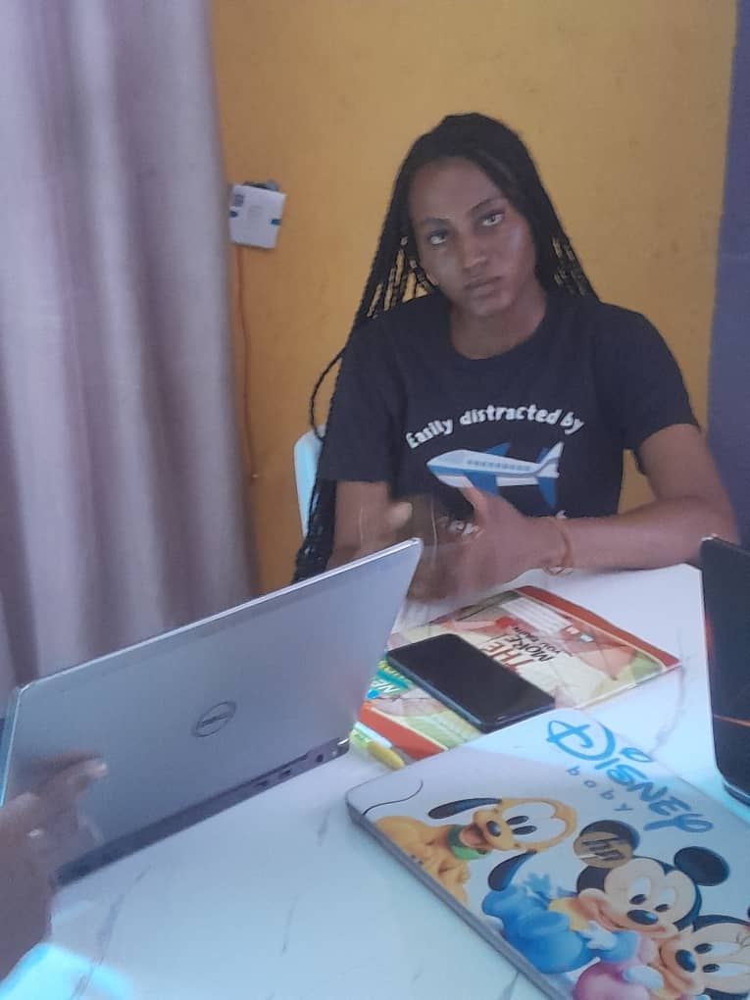
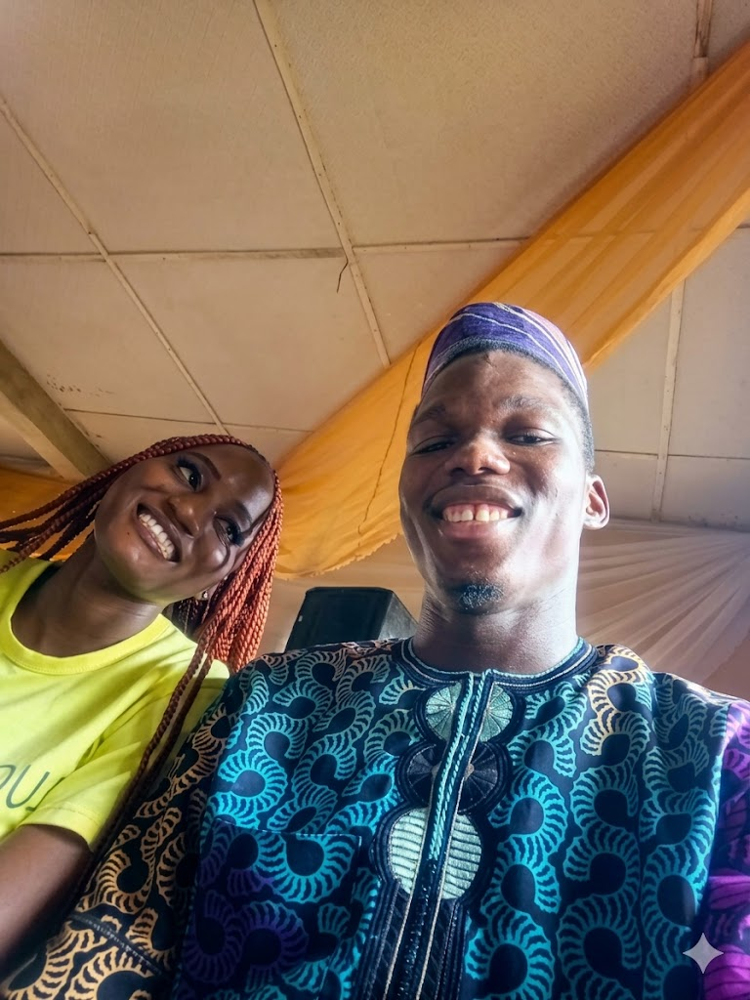

The undisputed CEO of the Friendzone Department and Grand Commander of stubbornness. I built this luxury dynamic terminal just to analyze your professional level of playing hard to get.
Warning: High levels of evasion logic detected ahead.
Exhibit A
The "Let's Just Be Friends" Manifest
You didn't accept the proposal, beautifully executing a smooth 180-degree dodge directly into the friendship zone. You’ve been doing me pure konikoni, acting like your heart has an end-to-end encryption I can't break.
[Status Check]: Stubbornness index currently operating at 99.8%.
Visual Archive
Our Timeline (Swipe / Scroll →)
Swipe across horizontally to browse the target dossier.

01 // The Crush
02 // The Stubborn One
03 // Konikoni Pro
04 // Friendzone CEO

05 // The End Game?
Bypassing Sarcasm Protocol
But Honestly...
Behind all the jokes and sarcasm, my intentions are pure. No matter how high you build your defense walls or how much you friendzone me, you remain someone completely unmatched to me.
I don't just love how beautiful you are, Mercy; I love your fire, your stubbornness, and every little thing that makes you exactly who you are.
System Ultimatum
Will you formally agree to stop the konikoni maneuvers and give Semako a genuine chance? Choose wisely.